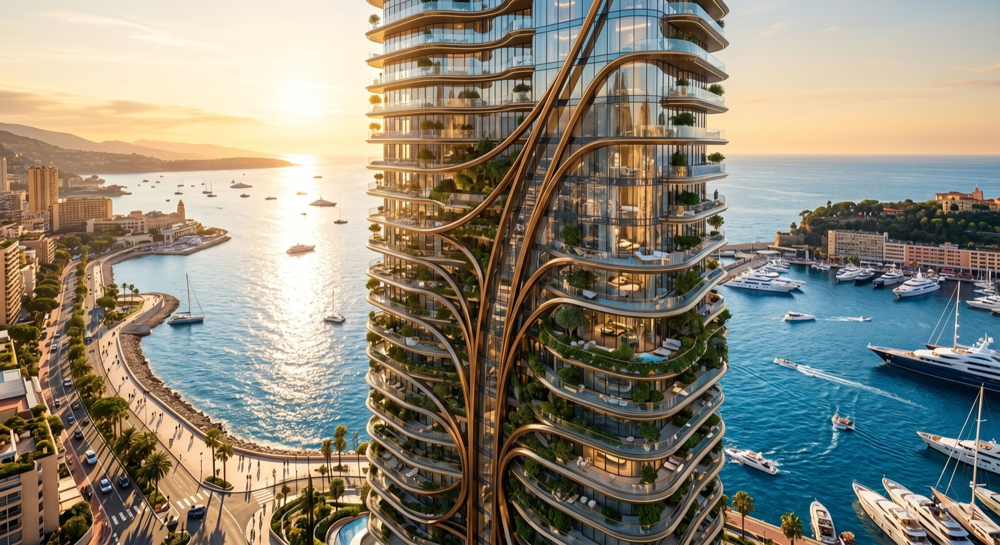
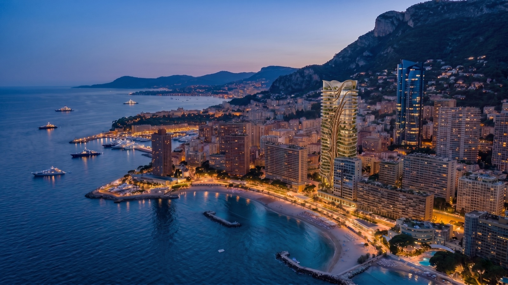
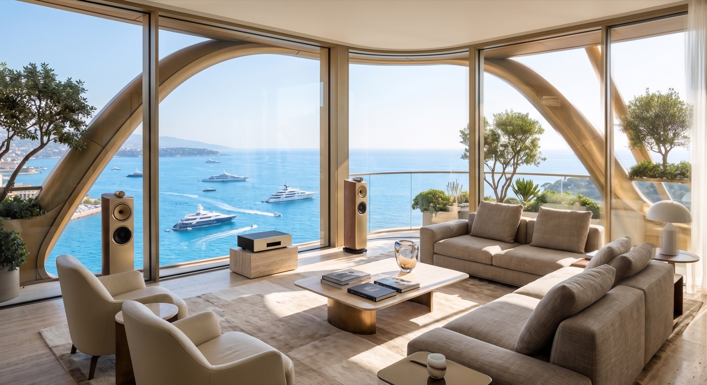
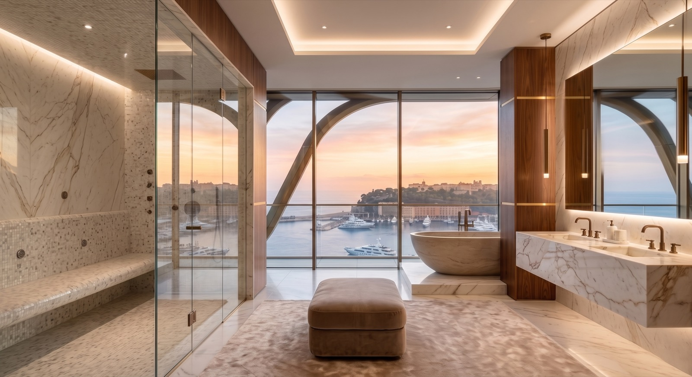
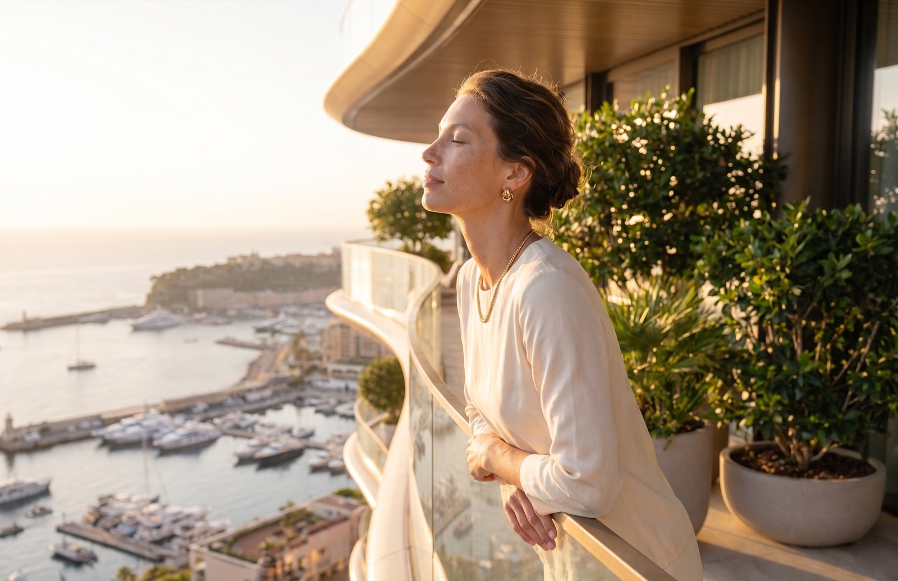
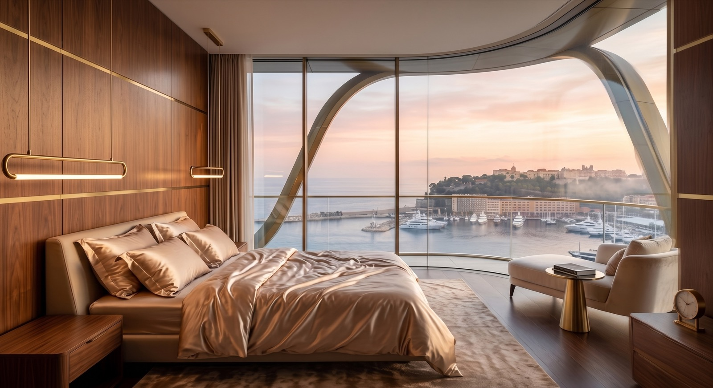
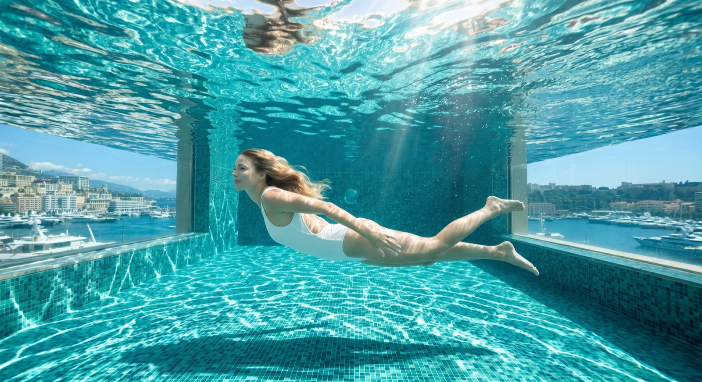
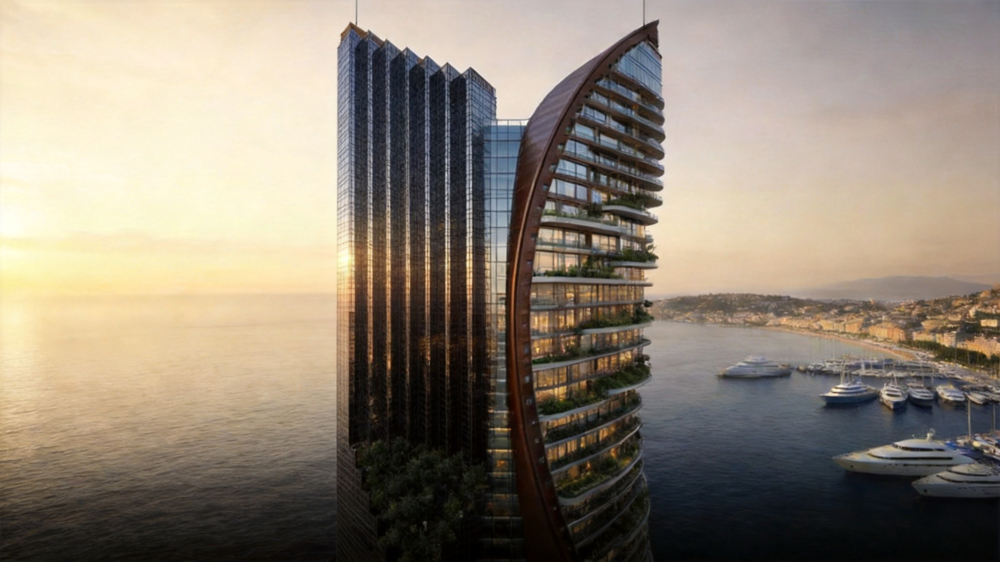
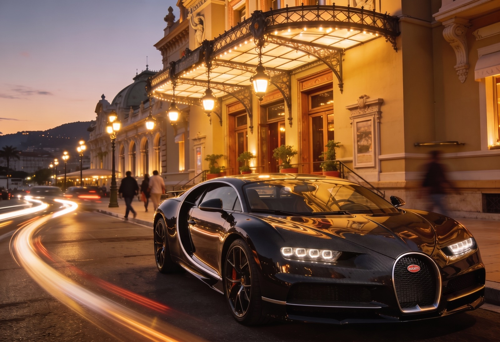
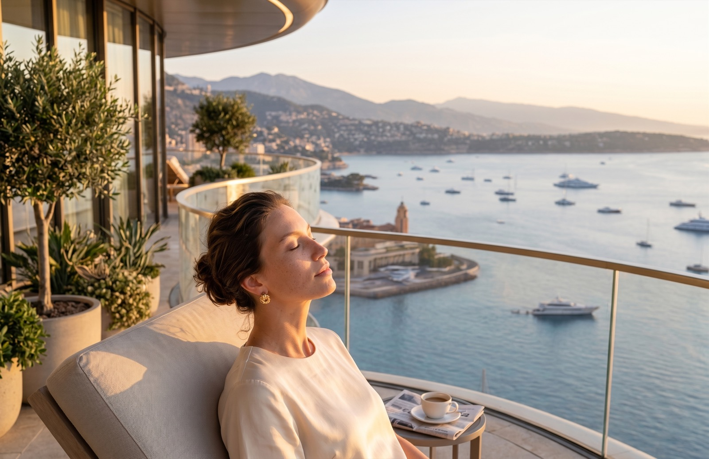

Côte d'Azur · Monaco
MNACO1
MONACO1A landmark on the Côte d'Azur.
Premium real estate
Monaco
Exclusivity
Trump Tower Monaco rises in curved silhouette above the marina — a residence of rare scale and finish, conceived for those who measure a place by its light, its address and its outlook.
21 Bd du Larvotto · Larvotto seafront, Monaco



MONACO1 · How it works
[ Explore the M1 token ]
A clearer way into premium real estate.
MONACO1 (M1) represents a tokenized interest connected to a premium Monaco real-estate opportunity — transparent, considered and accessible.


Trump Tower Monaco, made accessible — a tokenized interest in a landmark Côte d'Azur address, within a regulated framework.
Precision, applied to property.
We pair premium real estate with modern, data-driven infrastructure — using AI-era tooling to inform diligence, structuring and reporting.
Tooling supports, but does not replace, professional diligence.
Data-driven insights
Market and asset signals, organised to support clearer decisions.
Modern infrastructure
A platform built on contemporary, auditable rails.
Transparency
Reporting designed to keep investors informed.

A Full Picture
The brochure and the full visual archive — everything behind Trump Tower Monaco and the M1 token.
Download the brochureA closer look at MONACO1.
Waterfront Living
Curved above the marina, each residence opens to the light and water of the Cote d'Azur.
Private Dining
Intimate dinners with curated menus and a table set above the Mediterranean.
Infinity Wellness
Swim suspended over the harbour, where the water meets the horizon.

Private Transfers
Effortless arrivals and departures, arranged around your schedule.
Live the Riviera.
See the full collectionRegister your interest.
Join the MONACO1 waitlist to receive investor access, documentation and updates as the platform opens.
You're on the list.
Thank you — your interest in MONACO1 has been registered. A confirmation email is on its way, and our team will be in touch with investor access and documentation.
